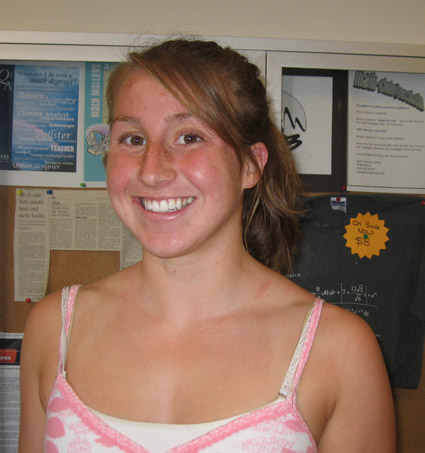
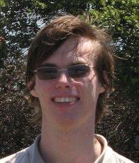
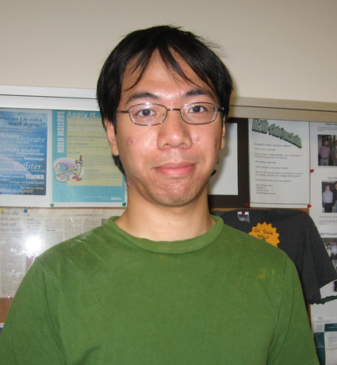
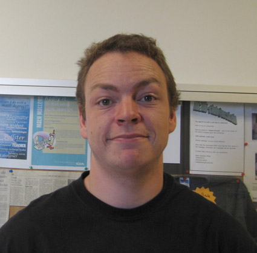

About Us...jump to
About Us
Our Purpose
We, the UCSD Math Club, would like to serve as a gathering place, as well as an academic and career resource, where all students interested in mathematics can further their involvement in the subject, meet other people with similiar interests, and discover some of the opportunities mathematics has to offer.
What We Do
The UCSD Math Club hosts various seminars dealing with graduate education, careers, and topics in mathematics to provide resources for our members. We also hold social events in order for mathematically-inclined people to meet and exchange ideas.
Constitution
Officer Profiles
Sarah Elghraoui
President- Major
- Applied Math
- Minors
- Middle East Studies
- Bio
- I'm a fourth year at UCSD hailing from San Diego.
- Interests
- History, current events
- Contact
- selghrao @ ucsd.edu
Leilani Gilpin
Vice President - Major
- Mathematics, Computer Science
- Minor
- Music
- Bio
- I'm a third year at UCSD. I enjoy swimming in my spare time
- Interests
- Swimming, Water Polo, knitting, music, and baking.
- Contact
- lgilpin @ ucsd.edu
Rene Claus
Secretary / Webmaster - Major
- Electrical Engineering
- Bio
- I'm a third year at UCSD. I enjoy math and computers.
- Interests
- Math, Computers, Star Wars, Ballroom Dancing
- Contact
- rclaus @ ucsd.edu
Gregory Wong
Treasurer - Major
- Economics, Mathematics
- Bio
- Muir student who is expected to graduate this summer. Favorite mathematician is Paul Richard Halmos
- Interests
- Tetris
- Contact
- gcwong @ ucsd.edu
Paul Baber
Public Relations - Major
- Economics
- Bio
- I enjoy bicycling
- Interests
- Cycling
- Contact
- pbaber @ ucsd.edu
- Major
- Mathematics
- Bio
- Third yeat at UCSD who plays the clarinet
- Contact
- hmilesleighton @ gmail.com